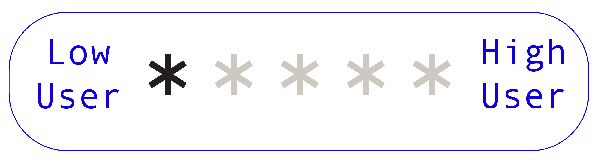
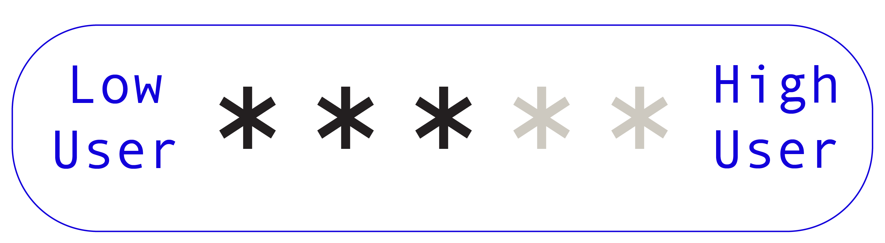
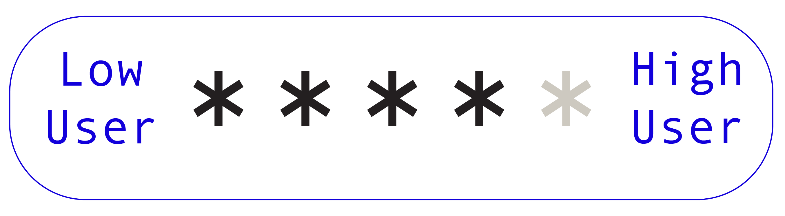
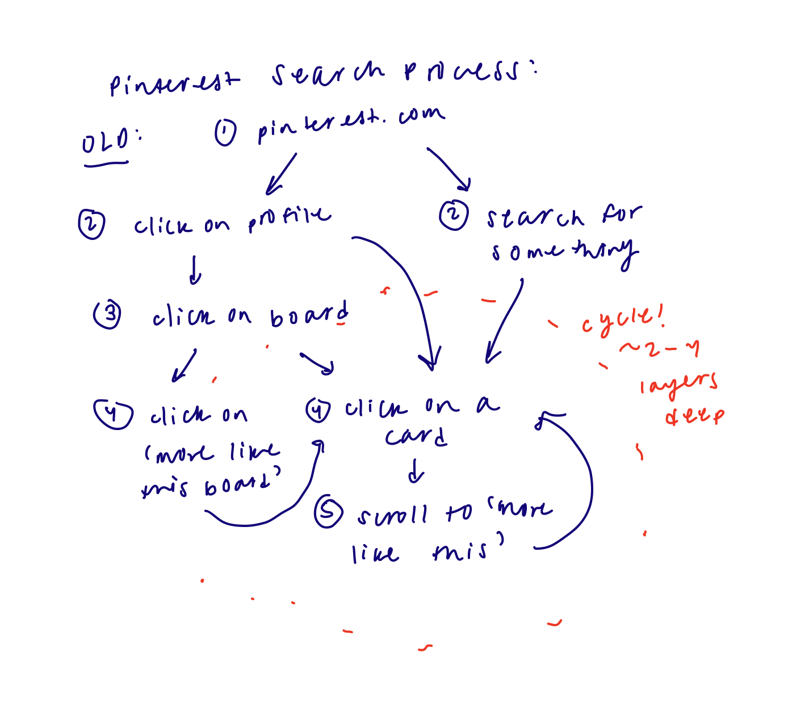
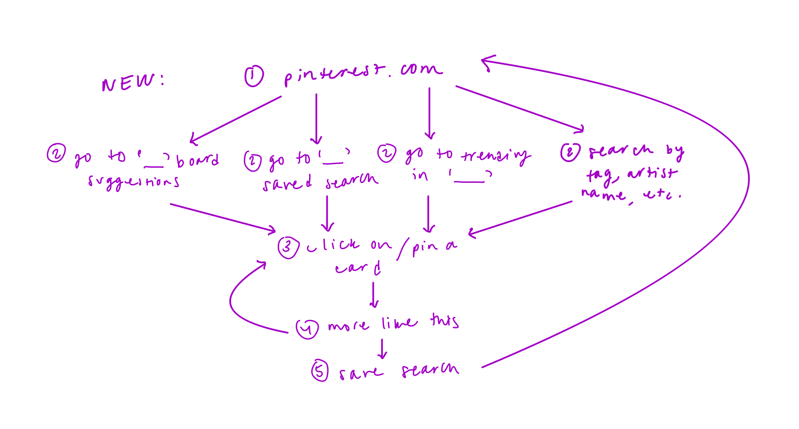

Pinterest Redesign
Papaya is a virtual wallet that allows users to securely store payment cards, identification information, and retail cards. It comes as a suite of products: an app, wallet sized tablet, or keychain.
View our full project here.
Background and Context
I have become an avid user of Pinterest because of my position as a Creative Director for my university's arts and fashion publication. The platform has been extremely useful for my team and I, and it has become a central way for me to put together creative inspiration. As a CD, I am responsible for creating a theme that can support four print shoots for each biannual issue that we produce. Pinterest has been the easiest way for me find and group images that materialize our concepts for moodboards and slide decks.
Working on this design project alone was definitely intimidating because I didn't want this project to simply reflect my own, preexisting perspective of Pinterest and I believe that collaboration can always bring in well-rounded and valuable insight. I tried as best I could to be self aware of my biases going in, and that this project will not be inclusive or representative of all Pinterest users due to the constraints of this design challenge.
I. Research and Key Insights
Research Strategy
1. Product Research
I decided to go through the Pinterest Home Page, Search Page, and Profile Page with an open mind and take note of its strengths and weaknesses.
2. User Research
I conducted three interviews and observations among a range of Pinterest users, from low to high usage. During these interviews, I also led an observational study where I observed the way users interacted with the interface, noting where weaknesses may lie.
Product Research
To get a high-level overview of the strengths and weaknesses of Pinterest's current design system, I took notes on the Home Page, Search Page, Profile Page, and Card Page. I wanted to navigate through Pinterest before honing in on the specific feature I redesigned.
Initial Thoughts:
1. There were a few inconsistencies across pages. For example - sometimes a search filter on the right hand side of the search bar appeared, sometimes there were filter tags on the top of the results page.
2. The search engine filtered its output by the description name of the card, rather than the card's visual features.
3. The card itself did not have tags or defining features in the description to help with filtering. There was no option on the desktop version to save the "more like this" for each card or board.
User Research
I conducted interviews with three different Pinterest users, who were each creators or designers with a need to find and organize creative inspiration, but with different frequencies and familiarities with using Pinterest.
Lily
 “I feel like a new user wouldn’t know where to start. I haven’t touched (Pinterest) since high school, it was really confusing for me so I never continued to look at it. I don’t think the interface is very intuitive in terms of “how do I pin things”, “where are the boards that I pin”, “how do I find my friends.” It has an element of social media where you can follow other people, but none of that really makes sense to me.”
Insight #1
New users to Pinterest have trouble with understanding the purpose of the platform, navigating through the site, and interacting with its features. For some, Pinterest lacks a clear hierarchy of information and is difficult to filter through because of inconsistencies in titles and descriptions of images.
How might we organize Pinterest's information in a clear and intuitive way so that new and experienced users can easily navigate the home page and search results?
Milly
Insight #2
While Pinterest is great for categorizing and sorting images, incomplete documentation for Pins and the lack of personalization may discourage users. It is unclear to users where Pinterest lies on the spectrum of serving as a social platform to just being a database for creative images and inspiration.
How might we help make Pinterest feel more personal while still maintaining its purpose as a "visual discovery engine"?
Noel
 “One of my favorite ways to find new inspiration is if I’m in a city that I’ve never been in, everything seems new. Like buildings look different, signs look different, different sounds and smells and everything, there could be something that could communicate that.”
Insight #3
In a narrow sense, Pinterest has an amazing image sorting algorithm, yet the actual search feature does not seem to give users the images they are looking for. In a broader sense about creative platforms and social media in general, to what extent do perfectly in tune algorithms help their users by supplementing their preexisting creative ideas, versus changing their users by deciding their next creative ideas for them.
How might Pinterest become a place for a new source of creative inspiration, similar to the experience of “walking in a new city,” without pushing users deeper into their preexisting, niche interests?
Redesign Opportunities
After synthesizing all of the high-level findings from my initial product observations and user interviews, I was able to define redesign opportunities in terms of tangible feature changes.
How might we reorganize the Home Page to both improve the user's process of searching for inspiration on Pinterest, and to make Pinterest feel more personal?
1. Grid layout of the cards feels unorganized and overwhelming.
2. Card titles and descriptions are confusing and incohesive.
3. Profiles don't feel personal and the social aspect is not heavily utilized.
4. The "more like this" page was one of the most useful features for users but does not currently have a high priority.
II. Ideation
Sketching
With all of these insights and opportunities for a redesign, I still wasn't too sure exactly where to start. The interviews really helped to give me a sense of where pain points lie during the process of using Pinterest, but I still needed to converge this information into one strong feature change. I put my ideas to paper, and started by visualizing what different solutions could look like to the various and broad problems users had with Pinterest.
While the end goal was still to redesign the Home Page, I found it helpful to walk through the other key features on Pinterest to see how changes to those can improve the overall organization and personalization of the platform.
 After lots of sketching and discussing with the same people I interviewed, I narrowed down the Home Page flow to the process above.
III. Design
First Iteration
IV. User Feedback
Lily
Milly
V. Final Prototype
The final version of the Home Page
Reflection + Next Steps
Overall, I'm satisfied with how this project came together. I learned so much about cybersecurity throughout this process, and I gained new design thinking skills by applying methodologies that I hadn't explored before. I believe that our project helps guide cybersecurity awareness and financial literacy for users, and I think it's very important to design with privacy and security in mind as we enter a new age of technology and data collection. If our team had more time, I would've liked to do more usability testing with our medium-fidelity prototypes, and I will continue developing Papaya products and mockups. I feel much more confident with product design and UI/UX design, and I hope to complete more projects like this in the future.